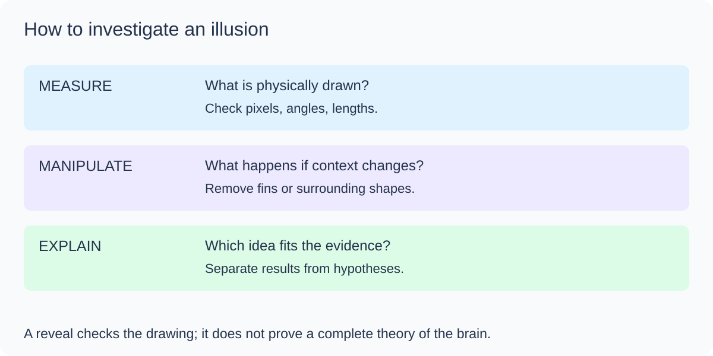
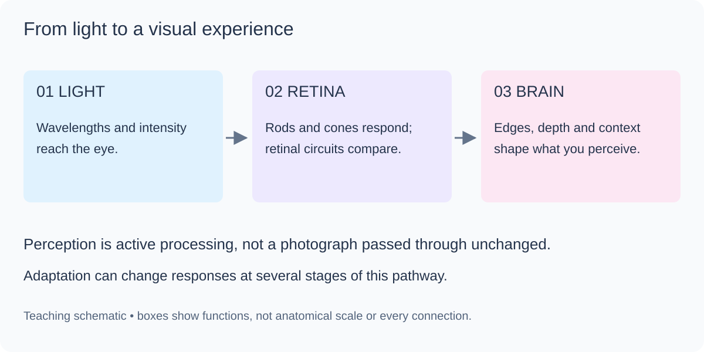
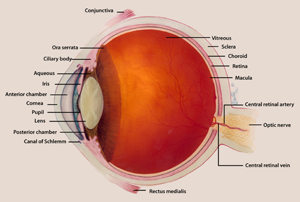
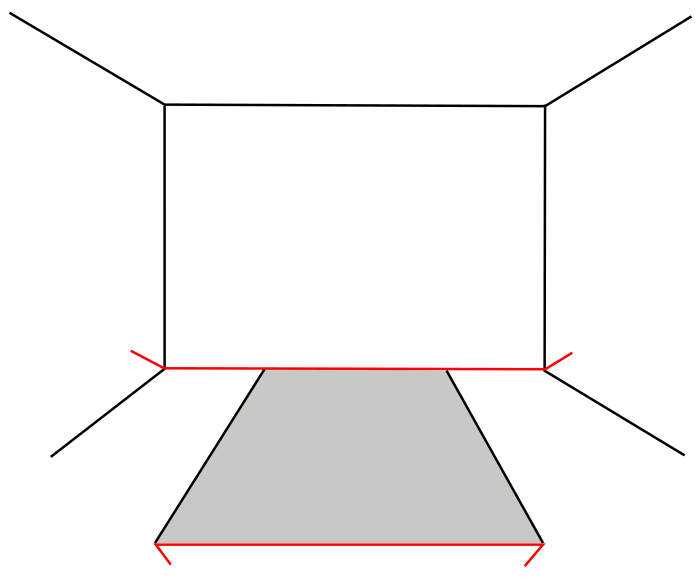
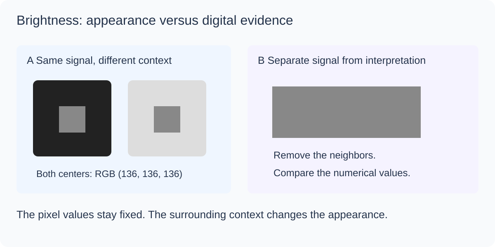

Visual Perception · Neuroscience · Art & Design
Optical Illusions Lab: Look. Test. Explain.
The pictures here are drawn with code. Most are still; a few demos move only when you start them. Yet your brain will see colors that are not there, lines that bend when they are straight, a triangle that does not exist, and a flag in red, white and blue made of nothing but cyan, black and yellow. Start with the negative-color trick below: it is the fastest way to feel your visual system at work.
Comfort note. A few demos flicker or spin (the lilac chaser, Benham's disk, the spiral). They never start by themselves, and you can skip them. If flashing or motion bothers you, or you have photosensitive epilepsy, skip those cards.
Documented reference images · compare before interpreting
Start with the published pictures
These are unmodified copies of externally published illustrations, not ClassroomOS redraws. They give you a reference for comparing our interactive reconstructions. A source documents a pattern; it does not guarantee that every viewer will experience an effect.


Start here · 45–60 minutes · pick any card in any order
You do not see the world. You see your brain's best guess.
Light lands on the retina as a smear of brightness and color. Your visual system has to guess, in a fraction of a second, what is out there: how big, how far, what color, moving or still. It guesses well almost all the time because it uses built-in assumptions about the world (light comes from above, parallel lines in a photo meet far away, shadows make things darker). An optical illusion is simply a picture built to make one of those assumptions give the wrong answer, and that makes it a free window into how the guessing machine works.
Read the question on each card and decide what you see before you touch anything. Your first impression is the data—including when you notice no illusion.
Press Show the evidence to draw the guides, or 🎯 Measure to read the exact color of any two spots yourself.
Click any picture to open it large on the screen with its question, so the whole class can look at one image together.
Your first investigation · 12 minutes · no animation needed
Can two identical things look different?

Start with these three tests. Before revealing anything, record a prediction. Then change the context or add guides and describe the evidence. An illusion may be weak or absent for you; that is a valid observation.
- 01 · Compare brightnessPredict which center square is lighter. Reveal, then measure both centers.
- 02 · Compare sizePredict which orange circle is larger. Remove the surrounding circles.
- 03 · Test an edgeLook for a white triangle. Reveal which lines are actually drawn.
Investigation notebook
Record one test at a time. Notes save automatically in this browser; download them to keep or share a copy.
Visual reference · enlarge any plate for class discussion
Inside the visual system
Use these plates to connect the illusions to anatomy and evidence. The eye collects light; perception emerges from processing in the retina and brain.





The headline trick · 3 minutes
See a negative turn into real color
Stare at the strange picture below, a flag drawn in the opposite colors, for half a minute without moving your eyes. Then the picture is swapped for a plain gray version. Watch what happens: you may see a brief colored afterimage over the gray. Its strength and hue vary between viewers and displays; the grayscale test image contains no chromatic color.
Adaptation: from retina to perception
Your retina has three kinds of cone cells for color. Stare at one hue and the cones that respond to it adapt: they turn their volume down.
Later neurons compare signals in pairs: red against green, blue against yellow, light against dark. This is the opponent process.
When you look at gray, the tired cones whisper while their partners shout, so you see the opposite color. That ghost is an afterimage.
That is why the trick works by inverting the picture. Where the negative is cyan, the cones that respond most to cyan light tire, so on gray that patch looks reddish. Where it is black, the light-vs-dark channel swings the other way and the patch looks white. The pale yellow corner leaves a bluish ghost. Software that inverts a photograph (255 − value for each color) gives a rough prediction of the afterimage. The real ghost is much paler and fades within seconds, as the visual system readjusts. Adaptation occurs at multiple stages of visual processing; “tired cones” is a useful shorthand, not a complete explanation.
More afterimage and fading effects
Light and dark that are not what they seem
Your brain does not measure brightness; it estimates the surface color of an object after subtracting its guess about the lighting. Edges and neighbors matter more than the actual number of photons. Several cards contain identical patches that look different; others demonstrate perceived edges or spots. Measure the intended patches to distinguish these cases.

Key idea: lateral inhibition
Each retinal cell that is lit up tends to quiet its neighbors. At a dark-to-light border the cell on the bright side is quieted less (its neighbors on the dark side are quiet) and the cell on the dark side is quieted more, so your brain exaggerates the edge. That one rule is the classic explanation for Mach bands and the staircase card, was long used to explain the ghost dots in the Hermann grid, and is part of why gray looks lighter on a dark background (simultaneous contrast). It is a useful first idea, not the whole story: several cards in this section (White's illusion, the Koffka ring, the checker shadow) show the brain also using grouping and its guesses about lighting, which lateral inhibition alone cannot explain.
Color is a conversation between neighbors
There is no such thing as "the color of a pixel" in your experience. Color is computed from the pixel and everything around it. Under a cyan haze the brain subtracts cyan, and then plain gray is read as red. Surround one color with two different neighbors and it splits in two. These tricks are the reason painters, web designers and photographers all learn to check a color in context.
Key idea: color constancy
Color constancy is the brain's habit of keeping an object's color the same while the light changes. A banana looks yellow at noon and at sunset even though the light bouncing off it is very different. Constancy works by estimating the color of the light from the whole scene and discounting it, which is exactly what the cyan-tinted strawberries hijack.
Size and length: the ruler in your head
The most famous illusions of all change how big or long things look. They were measured by 19th-century psychologists with rulers and stopwatches, which makes this section a perfect place to test an illusion rather than just look at it. Finish with the experiment at the end of the lesson to put a number on your own Müller-Lyer illusion.
Straight lines, bent minds
Lines that are dead straight, perfectly parallel, or exactly circular will refuse to look that way when you put the right distraction next to them. Short crossing lines, tile edges and background patterns push the perceived angle of a line away from its true one. Engineers meet this in the real world as optical traps in road markings and instrument panels, which is why they check with a ruler or software.
Motion from a still picture
Nothing here is animated, yet your visual system will report movement. Patterns of light and dark steps can fool the neurons that detect motion, especially in your peripheral vision, and tiny involuntary eye jitters (microsaccades) do the rest. Look at the picture, then let your eyes wander across it instead of staring at a single spot.
Key idea: peripheral drift
In the rotating-snakes family, each ring repeats the steps black, dark blue, white, yellow around the circle. Light and dark steps are processed at slightly different speeds, so the brain computes a tiny motion signal in one direction at every step. Because the pattern repeats all around the ring, the signals add up to a drift. This is peripheral drift, discovered by Alan Fraser and Kimerly Wilcox in 1979 and made famous by the Japanese psychologist Akiyoshi Kitaoka, whose rotating snakes (2003) are the strongest version. Scientists still debate the exact cause; differences in processing speed and small eye movements are the leading ideas.
Things that are not there
The brain hates gaps. When a few pieces of an edge line up, it connects them with a smooth illusory contour and invents a shape that sits in front of the rest. Your brain does this because, in the real world, an object that hides other things must be closer. It is a clever guess, and these three pictures push it past what the picture actually contains.
Two readings, impossible objects, and hidden 3D
Some pictures have more than one valid answer. Your brain picks one, then flips. This is bistable perception, and you cannot hold both readings at once. Others, like the Penrose triangle, have no consistent 3D answer at all. The last two cards produce depth from nothing but two eyes and a crowd of dots.
Mind tricks and measure yourself
Perception is not only about the eyes. Attention, reading habits and memory can be tricked as well. Then turn illusion-watching into an experiment: measure how strong the Müller-Lyer illusion is for you, collect a few trials, and compare with classmates.
Design challenge · 15–20 minutes
Design your own illusion
Designers do not only fall for illusions; they use them. A logo that looks balanced, a poster where one color seems to glow, a floor pattern that makes a hallway feel longer: all of these are illusions tuned on purpose. Each classic illusion is driven by a few numbers, so you can turn it up, turn it down, or switch it off. That is also how scientists discover why an illusion works.
- Predict. Pick an illusion and write down which setting you think matters most.
- Change one thing at a time. Move a single slider, look, and note what happens. Keep the others still, just as in a fair test.
- Find both extremes. Record the settings for the strongest version and the setting where the illusion disappears.
- Test it on someone. Show a classmate your strongest design without the guides, ask the card's question, then press Show the truth.
- Download it and use it in a poster, a slide or a logo idea. Explain in one sentence which mechanism from the cheat sheet makes it work.
Design log
Use the lesson's Save button to keep this on your device.
Cheat sheet: which mechanism made which illusion?
Almost every picture above comes down to one of a handful of tricks. When you meet a new illusion, ask which of these it is using.
| Mechanism | What the brain is doing | Where you saw it |
|---|---|---|
| Adaptation (tired neurons) | Over-used cells, from cones in the eye to motion-sensing neurons in the brain, turn down their gain, leaving an opposite-signed ghost. | The negative flag, colored dots, Troxler fading, lilac chaser, motion spiral |
| Lateral inhibition and contrast | Neighboring cells suppress each other, exaggerating edges and differences. | Chevreul staircase, Hermann grid (partly), simultaneous contrast, Cornsweet |
| Lighting and color constancy | Brightness and color are corrected for an assumed illuminant or shadow. | Checker shadow, strawberries, Albers squares, White's illusion, Koffka ring |
| Size constancy and depth cues | Perspective lines say "far", so far things are scaled up in your head. | Ponzo, Müller-Lyer, Ebbinghaus, Shepard tables |
| Angle and orientation bias | Neurons tuned to orientation interact, pushing perceived angles apart. | Zöllner, Hering, café wall, Poggendorff, Fraser |
| Motion detection | Brightness steps are processed at different speeds, creating a false motion signal. | Rotating snakes, Enigma, Ouchi |
| Grouping and completion (Gestalt) | The brain closes gaps and invents occluding shapes. | Kanizsa triangle, Ehrenstein, neon color spreading |
| Ambiguity and binocular disparity | Two equally good interpretations compete; two eyes compare dots to compute depth. | Necker cube, Rubin vase, magic-eye stereogram |
Illusions at work in the real world
Greek temple columns bulge slightly (entasis). The Roman architect Vitruvius said this stops them looking pinched in the middle; historians still argue whether that was the builders' real reason. Op artists like Bridget Riley and Victor Vasarely built whole paintings from motion and contrast illusions.
Painted lines that get closer together toward a curve make drivers feel they are speeding up, so they slow down. Designers use the idea on purpose.
Video compression, 3D rendering and VR all use the fact that you can not see some errors (and must see others). Hidden-surface tricks and fake shadows make flat screens feel deep.
Magicians exploit attention and change blindness. Designers of warnings and interfaces try hard to avoid the same blind spots.
Practice Problems
Check what you learned. Use the cards above to re-test anything you are unsure about.
Easy1. You stare at a bright red square for 30 seconds, then look at a white wall. What color is the afterimage?
Easy2. In the checker-shadow illusion, square A (dark, in the light) and square B (light, in the shadow) are actually...
Medium3. What is the name of the color-sensing cells in the retina whose adaptation contributes to color afterimages?
Medium4. Which illusion makes you see a bright triangle with sharp edges that is not drawn anywhere?
Medium5. In your Müller-Lyer experiment the reference line is 300 px, and you set the matching line (the one with inward fins) to 330 px to make them feel equal. By what percent did the illusion change your judgment?
Challenge6. Why do the rotating snakes seem to move although the picture is a still image?
Challenge7. Why does a negative flag in cyan, black and yellow turn red, white and blue on a gray screen?
Exit ticket: evidence beats guessing
Your writing stays on this device. Use the lesson's Save button to keep it.
Look further and credits
- Visual Adaptation (Michael A. Webster, 2015) · research review of adaptation in cones and later visual pathways
- Michael Bach's "Optical Illusions & Visual Phenomena" · a research-grade collection with explanations
- Akiyoshi Kitaoka's illusion pages · the home of the rotating-snakes family
- Best Illusion of the Year Contest · new illusions invented every year
- Checker shadow illusion (Wikipedia) · Edward H. Adelson, 1995
Most demos and explanatory plates were drawn with code for this class. The visual atlas includes two public-domain illustrations; the reference section includes two unmodified Creative Commons illustrations, each with its own license. The illusions themselves belong to the history of perception research: Müller-Lyer (1889), Ponzo (1911), Ebbinghaus (1890s, published by Titchener 1901), Delboeuf (1865), Zöllner (1860), Hering (1861), Poggendorff (1860), Jastrow (1889), Café wall (Gregory and Heard, 1979), Hermann grid (1870), Chevreul staircase (1839) and Mach bands (1865), Kanizsa (1955), Necker (1832), Rubin (1915), Penrose (1958), Cornsweet (1970), White (1979), Troxler (1804), Benham (1894), Fraser and Wilcox peripheral drift (1979), Ouchi (1977), Leviant (1981), Adelson checker shadow (1995), and the lilac chaser (Jeremy Hinton, 2005). The rotating snakes principle is Akiyoshi Kitaoka's; the version here is an original rendering of the same luminance-step idea.